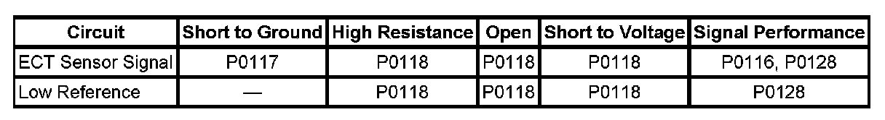
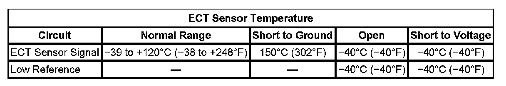

P0116
DTC P0116
DTC DESCRIPTOR
DTC P0116
Engine Coolant Temperature (ECT) Sensor Performance
DIAGNOSTIC FAULT INFORMATION

Perform the Diagnostic System Check - Vehicle prior to using this diagnostic procedure. Initial Inspection and Diagnostic Overview
TYPICAL SCAN TOOL DATA
ECT Sensor Temperature:

CIRCUIT/SYSTEM DESCRIPTION
The engine coolant temperature (ECT) sensor is a variable resistor that measures the temperature of the engine coolant. The engine control module (ECM) supplies 5 volts to the ECT signal circuit and supplies a ground to the low reference circuit.
The ECM uses this high side coolant rationality diagnostic to determine if the input from the ECT sensor is skewed warmer than normal. The internal clock of the ECM will record the amount of time the ignition is OFF. If the calibrated ignition OFF time is met at start-up, the ECM will compare the temperature difference between the ECT and the intake air temperature (IAT), to determine if the temperatures are within an acceptable operating range of each other.
CONDITIONS FOR RUNNING THE DTC
- DTCs P0112, P0113, P0117, P0118, P0502, P0503, P0601, P0603, P062F, P2610 are not set.
- The vehicle has had a minimum ignition OFF time of 10 hours.
- The ignition is ON.
- The start-up IAT is more than -7°C (+19°F).
- The Fuel Level Sensor parameter is more than 5 percent.
- This DTC runs once per ignition cycle within the enabling conditions.
CONDITIONS FOR SETTING THE DTC
- The ECM detects a temperature difference at power-up that indicates that the ECT sensor is 30°C (54°F) more than the IAT sensor. OR
- The ECM detects a temperature difference at power-up that indicates that the ECT sensor is 10°C (18°F) more than the IAT sensor, and the time spent cranking the engine is more than 10 seconds, when the fuel level is more than 5 percent. OR
- With the power-up IAT more than -7°C (+19°F), the ECM detects a temperature difference at power-up that indicates that the ECT sensor is 20°C (36°F) more than the IAT sensor. Then the vehicle must be driven for more than 6 minutes and 40 seconds at more than 40 km/h (25 mph). If the IAT sensor then decreases more than 4°C (7°F), an engine block heater was detected and the test is aborted. If the IAT sensor does not decrease, an engine block heater was not detected and DTC P0116 will set.
ACTION TAKEN WHEN THE DTC SETS
DTC P0116 is a Type B DTC.
CONDITIONS FOR CLEARING THE MIL/DTC
DTC P0116 is a Type B DTC.
CIRCUIT/SYSTEM VERIFICATION
1. If the ignition has been OFF for 8 hours or more, the ECT and the IAT, should be within 6°C (11°F) of each other and also the ambient temperature. Turn ON the ignition, with the engine OFF, and use a scan tool to observe the IAT and the ECT sensor parameters. Compare those sensor parameters to each other and also to the ambient temperature. A slight to moderate resistance in the IAT signal or low reference circuit, can widen the spread between the two sensors and cause this DTC to set.
2. An IAT sensor that is skewed lower at various ambient temperatures, due to more resistance than is normal, can widen the spread between the two sensors and cause this DTC to set. Measure and record the resistance of the IAT sensor at various ambient temperatures, and then compare those measurements to the Temperature vs Resistance Table. Refer to Temperature Versus Resistance.
3. Inspect the ECT sensor terminals for corrosion, and for engine coolant leaking through the sensor.
4. CAUTION: Under pressure, the temperature of the solution in the radiator can be considerably higher, without boiling. Removing the radiator cap while the engine is hot (pressure is high), will cause the solution to boil instantaneously, with explosive force. The solution will spew out over the engine, fenders, and the person removing the cap. Serious bodily injury may result. Flammable antifreeze, such as alcohol, is not recommended for use at any time. Flammable antifreeze could cause a serious fire.
Turn OFF the ignition.
5. Inspect the cooling system surge tank for the proper engine coolant level. Refer to Cooling System Leak Testing and Draining and Filling Cooling System (Vac-N-Fill). Component Tests and General Diagnostics Service and Repair
CIRCUIT/SYSTEM TESTING
IMPORTANT: All electrical components and accessories must be turned OFF and allowed to power down.
1. Ignition OFF, disconnect the ECT harness connector at the ECT sensor.
2. Ignition OFF, test for less than 5 ohms of resistance between the low reference circuit and ground.
- If greater than the specified range, test the low reference circuit for an open/high resistance. If the circuit tests normal, replace the ECM.
3. Ignition ON, verify the scan tool ECT Sensor parameter is less than -39°C (-38°F).
- If greater than the specified range, test the signal circuit for a short to ground. If the circuit tests normal, replace the ECM.
4. Install a 3A fused jumper wire between the signal circuit and the low reference circuit. Verify the scan tool ECT Sensor parameter is greater than 149°C (300°F).
- If less than the specified range, test the signal circuit for a short to voltage or an open/high resistance. If the circuit tests normal, replace the ECM.
5. If all circuits test normal, test or replace the ECT sensor.
COMPONENT TESTING
Measure and record the resistance of the ECT sensor at various ambient temperatures, then compare those measurements to the Temperature vs Resistance Table. Refer to Temperature Versus Resistance.
REPAIR INSTRUCTIONS
Perform the Diagnostic Repair Verification after completing the diagnostic procedure.
- Engine Coolant Temperature Sensor Replacement
- Control Module References for ECM replacement, setup, and programming. Verification Tests